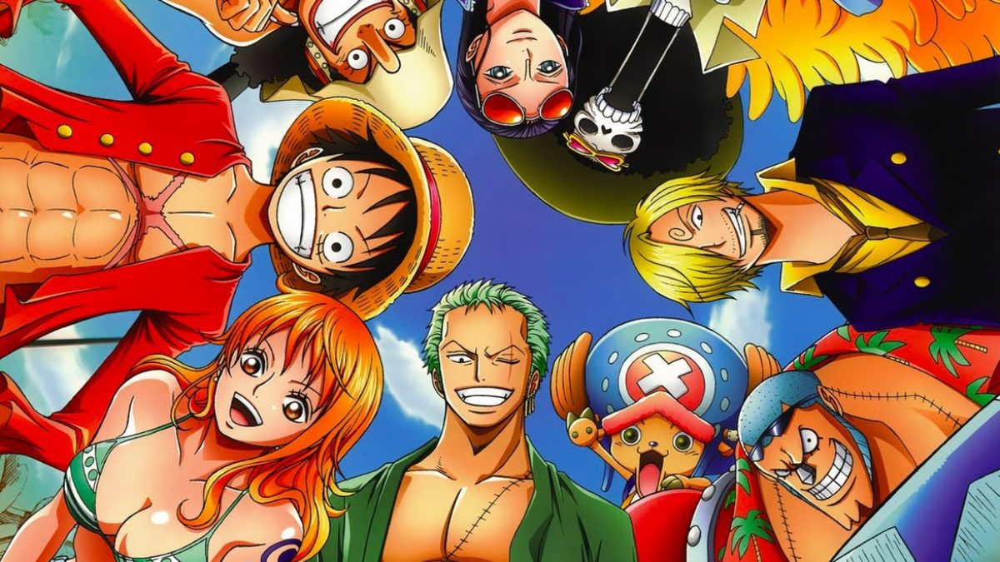

Afinal, o que é One Piece?
One Piece é a série de mangá (também adaptada para anime) mais vendida no mundo. Criado por Eiichiro Oda em 1997, até hoje vem se fortalecendo e atraindo uma legião de fãs no mundo todo.
A trama do mangá é voltada na história de Monkey D. Luffy, um garoto que usa um chapéu de palha que ganhou de seu idolo que quer ser rei dos piratas e achar o one piece, o tesouro lendário deixado pelo antigo rei dos piratas que pasme: até hoje ninguém sabe o que é.
Mas pra que isso tudo?
Essa é a parte mais interessante e uma das mais belas mensagens que One piece trás: liberdade. Sendo rei dos piratas, como o próprio Luffy diz, ele não seria alguém importante, ele seria a pessoa mais livre do mundo.
É só um pirata que estica?
.jpg)
Não! O pirata estica mesmo, mas one piece é cheio de referencias, momentos arrepiantes, mensagens sobre amizade, temas sérios e principalmente: mistérios. Vale a pena cada episódio/capitulo.
Sagas de One piece
- Saga East Blue
- Saga Alabasta
- Saga Skypiea
- Saga Water 7
- Saga Thriller Bark
- Saga Cupula da Guerra
- Saga Ilha dos homens peixe
- Saga Aliança Pirata
- Saga Yonkou
Bando do chapéu de palha
- Luffy
- Zoro
- Nami
- Usopp
- Sanji
- Vivi (saiu do bando)
- Chopper
- Robin
- Franky
- Brook
- Jinbei